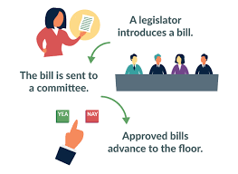

The Committee Action
If the committee takes up the bill, it goes through several steps:
- Subcommittee Review - The bill is often sent to a smaller subcommittee for detailed study.
- Hearings - Experts, stakeholders, and government officials testify for and against the bill.
- Markup - The committee goes line-by-line through the bill, debating and amending it.
- Committee Vote - Members vote to report (approve) the bill out of committee, table it (kill it), or send it back for more work.
